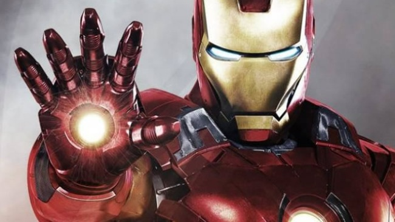

Iron Man 2008
Người sắt hay Iron Man là một nhân vật hư cấu của hãng truyện tranh Marvel Comic, được sáng tác bởi tác giả, nhà văn Stan Lee. Iron Man tên thật là Tony Stark, một tỷ phú ăn chơi, một kĩ sư công nghiệp tài giỏi. Tony Stark bị chấn thương nặng vùng ngực trong một vụ bắt cóc (những kẻ khủng bố bắt anh chế tạo vũ khí huỷ diệt hàng loạt cho chúng). Thay vì chế tạo vũ khí, Tony đã chế tạo một bộ giáp sắt để tự cứu mình và thoát khỏi căn cứ của bọn khủng bố. Thông qua tập đoàn công nghiệp của mình, Stark chế tạo ra nhiều vũ khí quân sự giúp anh chống tội phạm. Trong suốt quá trình phát hành truyện về nhân vật Iron Man, tiết lộ cho thấy Iron Man đã từng là thành viên nhóm siêu anh hùng Avengers, nhưng sau đó đã rời nhóm này. Iron Man cũng hóa thân thành rất nhiều nhân vật khác nhau trong loạt truyện tranh về mình. Đây cũng là nhân vật giàu nhất trong thế giới siêu anh hùng của Marvel Comic (Tony là giám đốc của tập đoàn công nghiệp Stark Industries).
- Tên thật: Tony Stark. - Các nhóm đã tham gia: Avengers; New Avengers; SHIELD; Department Of Defense; Thunderbolts; X-Men. - Nơi sinh: Long Island, New York (Mỹ). - Gia đình: Là con trai của Howard Stark, 1 tỷ phú công nghiệp giàu có và là giám đốc tập đoàn Stark Industries. Cha mẹ anh đã chết trong một vụ tai nạn xe hơi. - Nghề nghiệp: Anh là giám đốc tập đoàn Stark Industries. Anh thừa hưởng tập đoàn này sau khi cha mẹ anh chết trong vụ tai nạn xe hơi. - Bạn bè: Captain America (Steve Rogers), War Machine (James Rhodes), Hulk (Bruce Banner), Thor, Rescue (Pepper Potts),... - Đặc điểm nhân dạng: Trên ngực có gắn một quả tim nhân tạo có năng lượng. Quả tim này đuợc ghép sau khi Tony bị thương nặng vùng ngực trong một vụ nổ bom.
SCREENSHOT
Created by: Tong Gia Linh